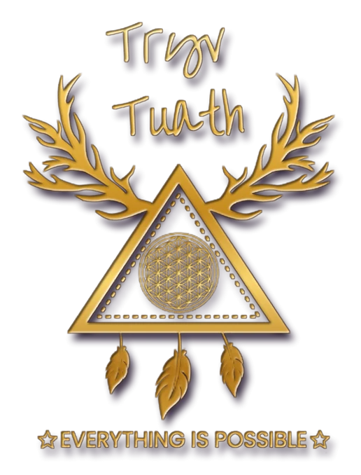
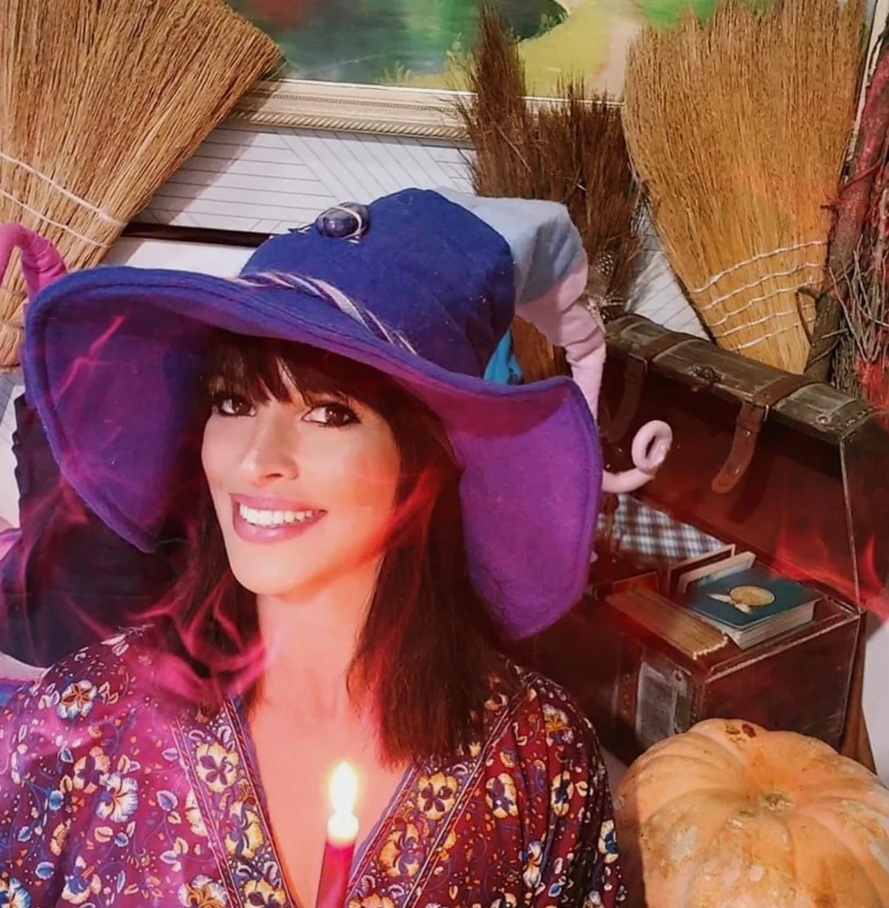
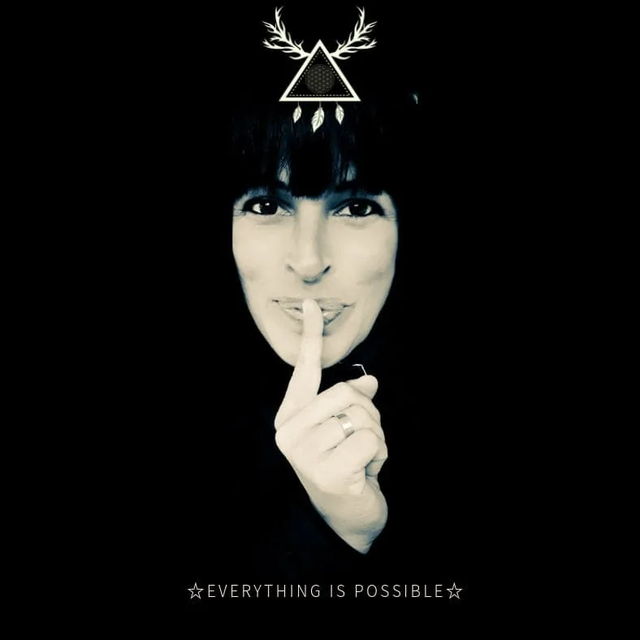
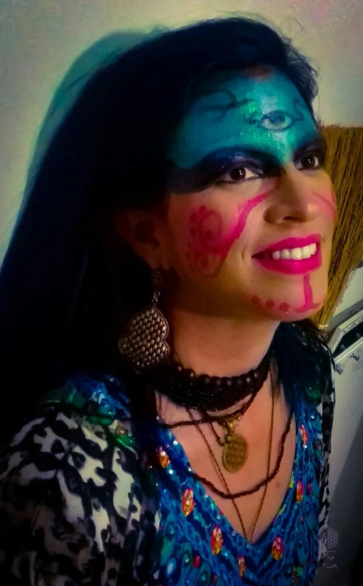
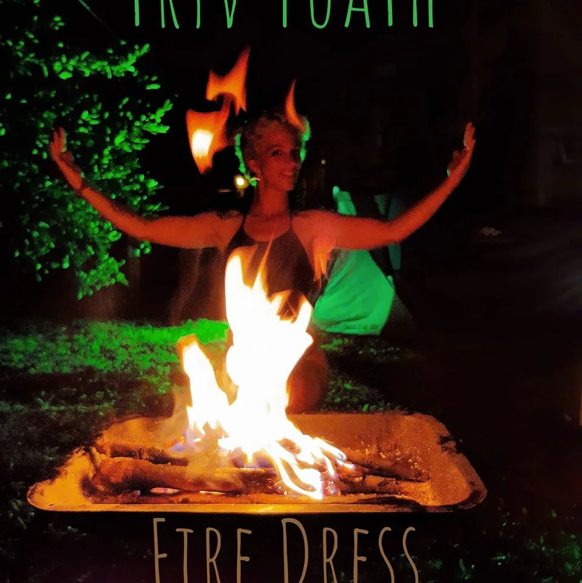
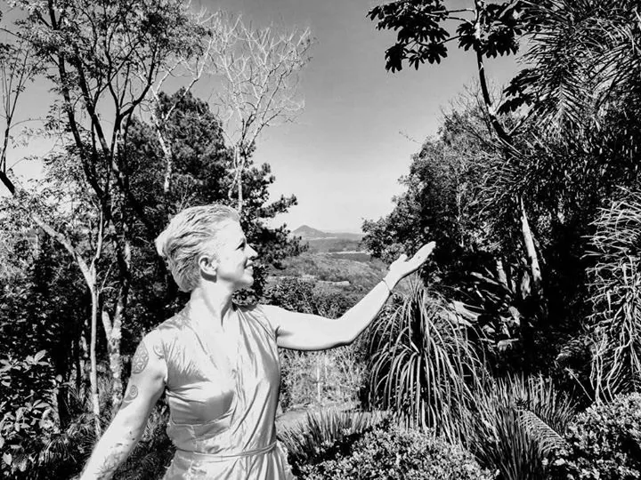

Tarô e Oráculos
Leitura de 30, 60 ou 90 minutos, com vários baralhos à escolha. Remota, por videochamada ou foto e áudio, ou presencial com hora marcada.
- 30 min
- 60 min
- 90 min

Era uma vez uma pergunta…
Tarô, oráculos e terapias com Tryv Tuath. Com amor, verdade e um pouco de magia.
Passe a varinha pela página…
Respire, pense na sua pergunta e deixe a mão escolher. O baralho sabe o caminho.
Toque em uma carta do leque.
A mesa encantada é um carinho para o seu dia. A leitura completa, feita com atenção à sua história, é com a Tryv.
Seis portais se abrem a partir da sua data de nascimento. É só um gostinho: cada um deles a Tryv aprofunda em consulta.
Oito sabbats marcam o giro das estações: quatro festas do Sol, nos solstícios e equinócios, e quatro festas do fogo, entre elas. Escolha a sua roda e toque num sabbat.
Uma casinha de bruxa escondida no bosque. Passe a varinha na porta e entre: tem ervas, chás, cristais, magias leves e um caldeirão fervendo.
Cada povo deu nome e rosto ao sagrado. Conheça algumas divindades, seus símbolos e o que se costuma oferecer a elas.
✦ Algumas destas são religiões vivas, como as de matriz africana, o hinduísmo e o xintoísmo. Para cultuar essas divindades, siga a orientação das próprias tradições e de quem as pratica.
Conheça as terapias e marque uma conversa para entender em que momento você está e qual caminho pode te ajudar.
Leitura de 30, 60 ou 90 minutos, com vários baralhos à escolha. Remota, por videochamada ou foto e áudio, ou presencial com hora marcada.
Um programa feito para você conquistar seus objetivos, pelo método exclusivo dos 4 elementos da natureza. Ligações semanais e tarefas para realizar.
Ritual presencial ou remoto para alcançar um objetivo, através da conexão com os 4 elementos da natureza.
Terapia de regressão a vidas passadas, realizada em 10 dias.
Envio e tratamento com Reiki, remoto ou presencial, com Mestre Reiki.
Cursos presenciais e remotos para quem quer aprender a caminhar com as próprias mãos. Pergunte quais estão abertos.





“Definir Tryv Tuath é como tentar traduzir a magia. Tryv é uma proposta, não uma pessoa. Um pulsar de ideias e sentimentos.”
Ser a Tryv é vestir-se de estrelas no berço das nebulosas, numa casinha na floresta. Na essência wiccana, pés xamânicos, mente hermética, vibração cósmica entre todos os sagrados.
Todas essas mulheres alimentam a ideia de quem é essa essência. Nenhuma definição seria possível se usada separadamente.
Quando você toca uma coisa com consciência profunda, você toca em tudo.Lao Tzu
Desmistificando seu poder espiritual.
Um guia prático, com técnicas simples para levar ao dia a dia. Convida você a olhar para as próprias crenças, refletir e se descobrir, com linguagem clara e inspiradora, para aprofundar sua conexão espiritual e chegar a um estado de bem-estar.
Toque na capa para abrir o livro.
Quero o meu exemplarAtendimento remoto para qualquer lugar, ou presencial com hora marcada.
As músicas que a Tryv escolheu para acompanhar a sua visita.